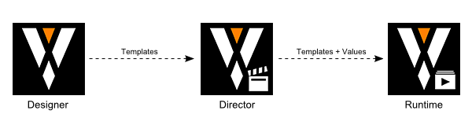
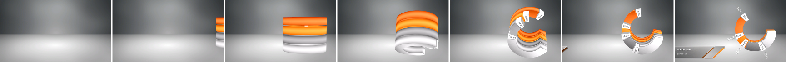
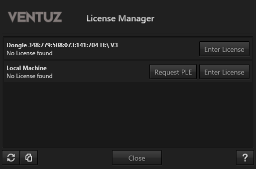
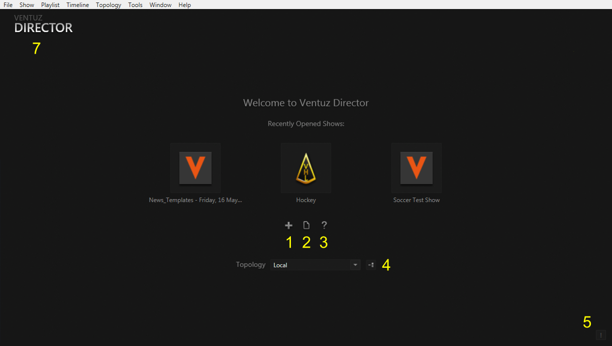
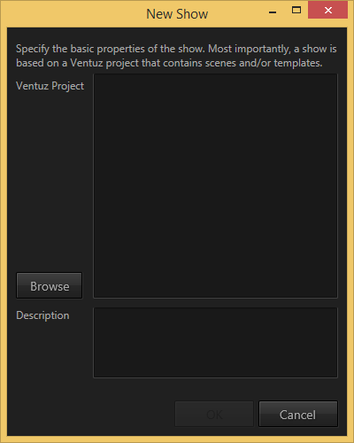
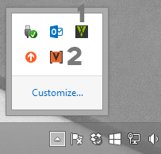
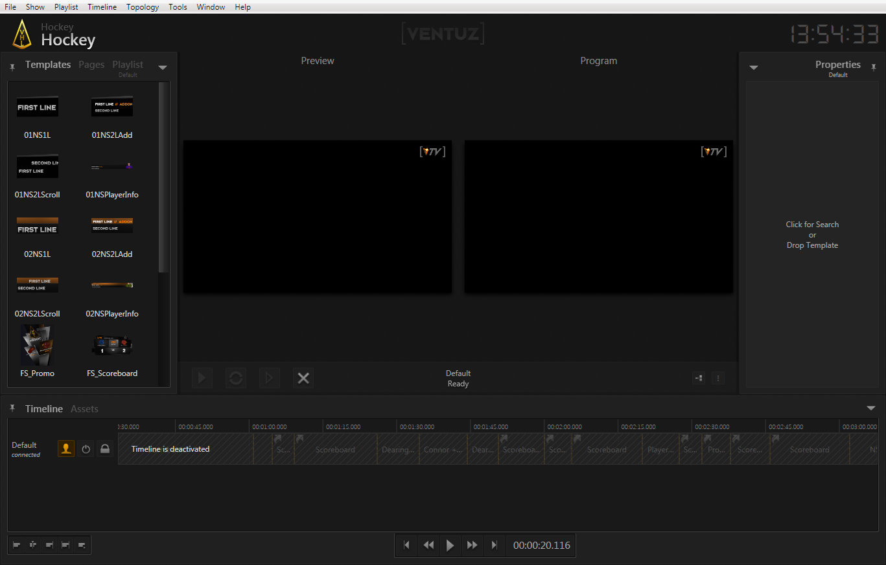
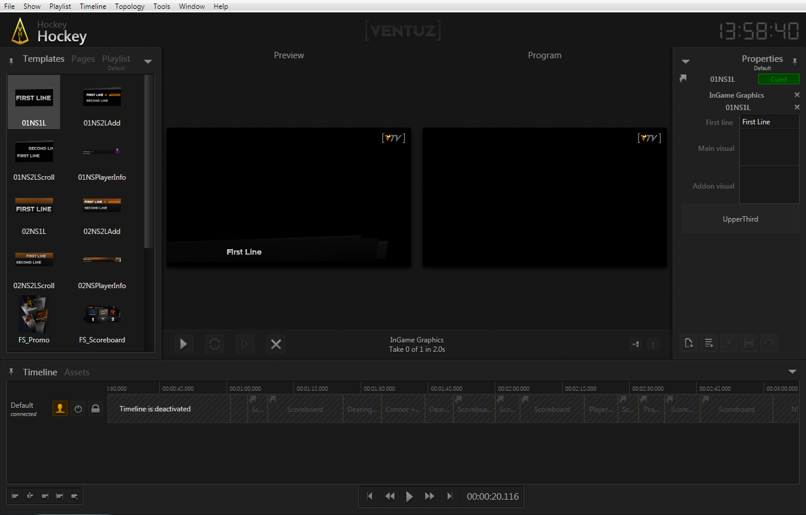
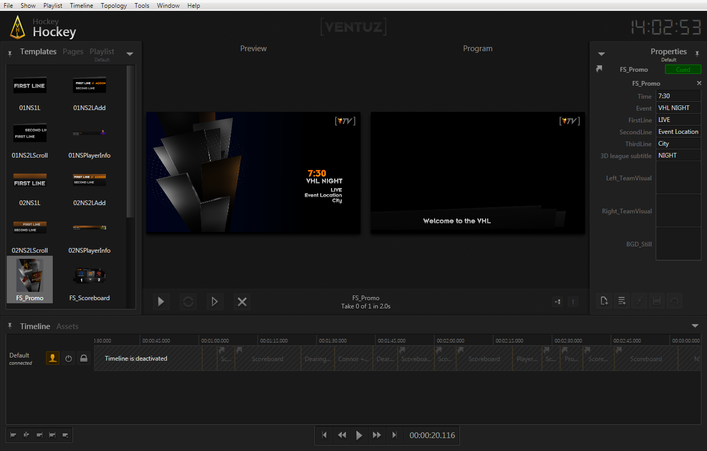
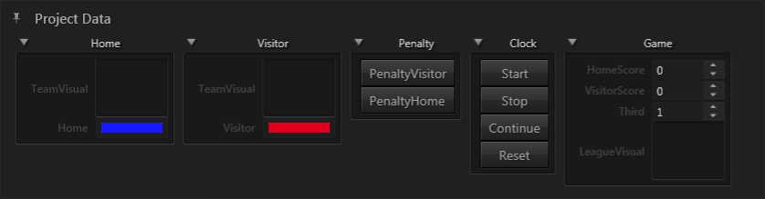

Ventuz Director is a template-based show control application. Where the Ventuz Designer is an authoring tool used to design visually rich and highly interactive 3D content, Director focuses exclusively on the job of using such content as part of a larger show. In fact, Director does not even create any 3D output itself but sends control commands to the Ventuz Runtime which provides the full power of the Ventuz Rendering Engine.

A Director operator does not concern with graphic design but simply uses pre-prepared graphics in the form of templates and makes sure that the right information gets shown at the right time.
So what are templates? A typical workflow starts with a designer creating a Ventuz project. He defines the look-and-feel of a project such as which colors to use in a bar chart or the style of an over the shoulder graphic. However, the actual content/values are usually not known at this point in time. So instead of storing the values shown in a chart inside the scene, he rather creates a template for the chart. A template defines what animations to play to bring it on screen, what the graphical elements the chart consists of and what animations to play to get it off again. Most importantly, a template also defines what values need to be filled-in at show time. In our example, those might be the latest update of counts during an election. The actual result does not matter for the designer, in fact he will most likely prepare the Ventuz Project weeks or months before the actual event occurs.

On the day of the election, the operator running the show grabs a copy of the Ventuz project and heads off to the show. He opens up Director and is basically ready to go. Whenever a bar chart is needed, he just selects it inside Director from the list of all templates he has been supplied with. He cues it, fills in the actual values and when the director of the show needs the bar chart, the operator just presses "take". It's that simple!
The remainder of this document assumes the reader is an operator and guides him through the second part of the workflow described above. It uses the demo content that shipped with the Ventuz installation and therefore being able to design templates is not required in order to follow the steps shown.
To install Director, download the latest installer from the Ventuz Website. The installer contains Ventuz Director, Designer and Runtime as well as a set of configuration tools. Once the download has finished, double click on the installer. After reading and accepting the End-User License Agreement, choose the type of installation and location, press install and everything is ready to go.
Ventuz frequently publishes updates that contain both bugfixes and new features. Within a major version (e.g. v4.0.0-V4.0.x), only bugfixes are added to ensure scene compatibility and maximum stability. A new major release (e.g. an update of V4.0.0 to V4.1.0) can contain new features that may prevent older versions of Ventuz from reading files once they have been saved in the new release!
To use Director, a license is required. Therefore starting Director without a license will automatically launch the Ventuz License Manager. There are various Ventuz Editions that support cluster rendering, SDI output and more. If a license has already been purchased, see Ventuz Getting Started on how to activate it. Since this guide is written for new users, we'll instead focus on acquiring a PLE license.

The screenshot above shows two entries: The first represents a Ventuz dongle that has been detected which contains no appropriate licenses. Purchased licenses are usually installed on a dongle so an operator can take the license with him when switching machines. For PLE licenses, a license is stored on the machine itself instead of on a dongle. Therefore click the Request PLE button.
An active internet connection is required to request a PLE license!
After filling out the registration form, a PLE license will be stored on the machine.
The Professiona Learning Edition has been created for training and evaluation purposes such that users can experiment with Director before making a buying decision. In PLE mode, Director behaves exactly the same as with a full license and there is no time limit. There are however a few restrictions:
In addition, the Ventuz Presentation Runtime that is responsible for producing the actual 3D output will render a watermark on top of its output.
When opening up Director by selecting the Ventuz Director entry in the Windows Start menu, the first thing a user sees is an empty workspace.

The center row of three icons represent the last three shows that have been opened which may or may not contain entries depending on - of course - if there have been opened shows before at all. The workspace also contains:
In the lower right corner is the Messages icon. Whenever an error or warning is logged, this icon will flash red or orange respectively. Click it to open up the message window that contains the full application log. Click it again to hide the message window.
We start by creating a new Show. Go to the File/New... in the main menu bar at the top of the application or press Ctrl + N on your keyboard. A show represents a single event or occasion. A weekly news show for example would consist of one Ventuz project and a show for each week. Each show has different content, but all use the same basic setup and the same set of templates.

To create the show, simply select the project it is based on from the list of previously used projects or search for it using the Browse button. If the project has not been set up for usage in Director yet, an additional dialog will appear requesting which of the scenes available in the project should be used. This information is written back to the project file and will not have to be entered on subsequent shows.
As soon as a show is opened, a few things will happen in the background. Director will connect to the Ventuz Machine Service (VMS) that has been installed as part of the Ventuz installation process. You can find it on the right side of the Windows Start bar at the bottom of the screen (where for example the Windows volume control is as well). As a typical Windows machine has a number of services running, one usually has to click on the small triangle to reveal all other services to see the small "V" icon of the VMS. The V is green if everything is okay or red if there was an error. Hover over the icon to get more information about the VMS's status.

In addition to the VMS, an instance of the Ventuz Runtime is started. This is the application that actually performs all rendering. Director just grabs the outputs and shows them inside it's own user interface. If there is an SDI-video board in the machine and it has been configured correctly to be used with Ventuz, the rendering output will now appear on the SDI signal.
For more information on configuring your Ventuz environment and especially getting SDI hardware to work with Director, see Setting up the Environment.
Director uses a highly configurable docking window user interface. New windows as well as additional layouts can be added/removed via the Window main menu. In this menu, you can also change the visibility of windows.

All layouts are stored in the user-settings of the local machine and can also be bundled into the Ventuz Project file. So when opening a show for a project someone else has created, the arrangement of windows may look different from the default layout shown here and some windows may have been hidden or may have been removed from the layout.
The default layout contains two render output windows, one for on-air content and one for preview, in the middle of the workspace. Arranged around them are multiple docking windows which will be discussed as needed.
To get content on air, one first picks a template and puts it into the cue. Move the mouse to the docking window on the left labeled Templates and double- the 01NS1L thumbnail in the top left corner. Three things will happen:

The fastest way to access templates is by pressing + on your keyboard's number pad. This opens the Shot Box where you can enter the first few characters of a template's name and select it from the filtered search result.
The preview is rendered internally by the Runtime but notice that it does not appear in the on-air (= Program) window. To put the template on screen, click on the Take Button on the left of the Show Control (just beneath the lower left corner of the program output window), or press F1. Again, multiple things happen:

A show often has properties that are not associated with one template in particular but the show as a whole. One example would be the current score in a football match, another the name of a guest speaker in a moderated panel. Instead of adding such properties to each panel, the author of the Ventuz scenes can declare them in a dedicated space, the Project Data, and thus associate them with the project in general instead of any particular scene or template.
Open the Project Data docking window via the Window menu in the main menu bar. By default, the Project Data window opens in the right docking area as an additional tab along side the Properties window. To give it more room, -press and hold on the "Project Data" label of the docking window. Then drag it to the drop area symbol that appeared on the top of the application window (small white/blue box with a triangle in it). As soon as you hover over that icon, a preview of how the window will dock appears. Release and the Project Data window is now docked to the top of the workspace.

To see the effects of this panel, cue the FS Scoreboard template. By changing the "HomeScore" property, the score shown on the scoreboard changes. when now cueing the Scoreboard template, the same score is shown here as well.
What if the show is following some form of script or the general order of templates is know in advance. There are three basic approaches/workflows to prepare for such an event:
More details on these approaches and how they can be combined will be given in the respective chapters.
While this is basically all that is required to run a show, Director offers a lot more functionality for you to discover. The remainder of the Ventuz Director user manual will guide you through all of this and help you become a first grade Ventuz Director operator!